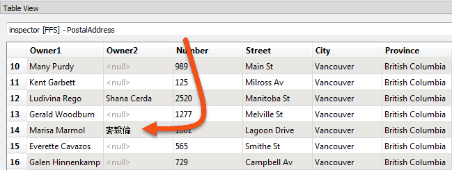
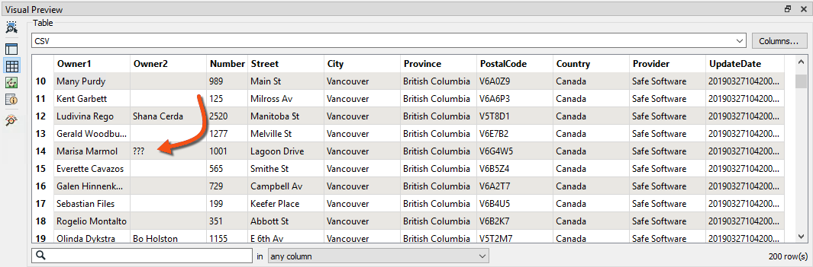
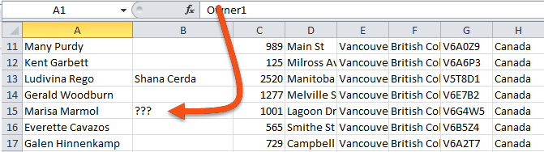
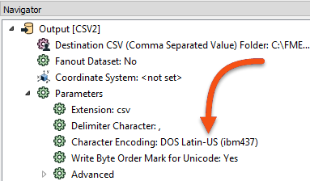

After completing this lesson, you’ll be able to:
If the feature counts cannot help pinpoint a problem's location, the next step is inspecting data at crucial translation stages.
Generally, issues in an output dataset occur when:
A translation from a File Geodatabase of addresses to CSV format renders attribute values incorrectly in the output. For example, your written file renders the name "麥毅倫" as "???".
An encoding problem has occurred, but where? The fact that data appears incorrect in another application does not accurately indicate where the workspace introduced that problem.
In this scenario, the author should check the data at critical stages to determine when the data last looked correct.
It's easy to assume source data is correct without checking it. If possible, you should inspect the source data in its native application to confirm its accuracy:
If the data is incorrect at the source, then there is little chance the translation output will be correct. However, in our example, it is valid in ArcGIS, so the translation should work.
If the source data is correct in its native application, inspect it using FME. Either open the data directly in the FME Data Inspector or - if you ran the workspace with caching turned on - open it in FME Workbench:

If the data is incorrect at this point, then the process of reading the data with FME is at fault. Again, in our example, the data is correct, so we must continue to diagnose the problem.
If you need to find out where your problem is, start with reading. Any issues created during reading will likely appear throughout the rest of your workspace.
Now, we should inspect the data between transformation and writing.
The data is available for inspection if you ran the workspace with caching turned on (Run > Enable Feature Caching). If not, please turn on this option (or Writers > Redirect to FME Data Inspector) and re-run the workspace.
Inspect the data to see if it was correct at the point just before writing:

If Visual Preview shows � characters at this point, we can assume that the problem occurs in data transformation before writing. You can use Feature Caching to inspect each step to locate where the problem appears.
The data is still correct in our example, so we should test the output dataset next.
If the data is correct before writing, then writing might be the problem.
Open the output dataset in Visual Preview. This step will show the data as FME wrote it (and, of course, read it back). If the data is incorrect here, then the problem will have likely occurred during the writing of the data:

In the above example, if Visual Preview shows � characters at this point, the data has been mangled during writing. That appears to be the case here.
Another check to make is to open the data in a text editor. It will not be possible to do this for every dataset (binary files or databases, for example). However, text-based files can provide definitive proof of whether the data is correct at this point:

For our example, this confirms that the problem occurs when writing the data. However, this might only sometimes be the case.
If FME (and a text editor) can display the output data, then the intended application is not interpreting the data correctly.
So, open the output dataset in the destination application. If FME can read the data correctly, and it looks correct in a text editor, then the problem is more likely to be with how the end application interprets the data:

That would be particularly true if the format were non-native to that application, for example, reading a Geodatabase outside of an Esri product.
These techniques narrow down where an error might have occurred but don't always specify the cause. For example, incorrect output could mean that FME has a limitation in that writer. The workspace author has set an incorrect parameter, or one application uses a different default encoding than another.
In this case, knowing the writer is at fault, we can check the writer parameters and find one that appears to be setting an incorrect encoding:

In short, these techniques identify where to investigate first but won't provide an absolute answer.
Encoding is a good example here, but it's also an example of where you should check that your computer can view such data. If your computer is in the wrong locale, it might be impossible.